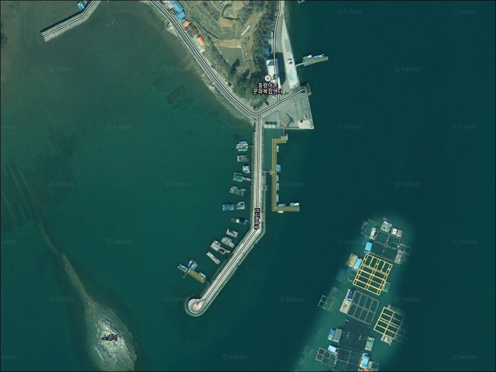
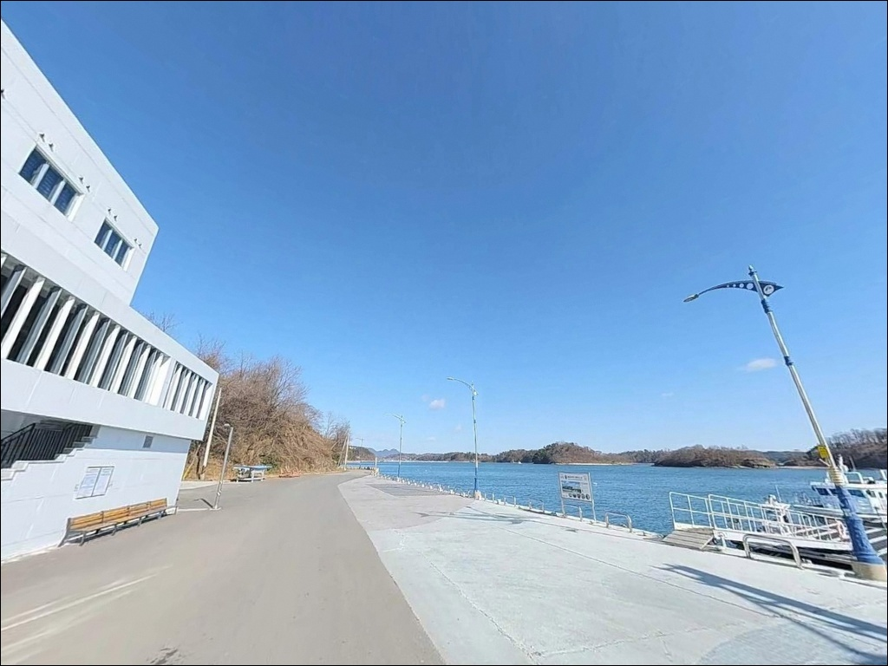
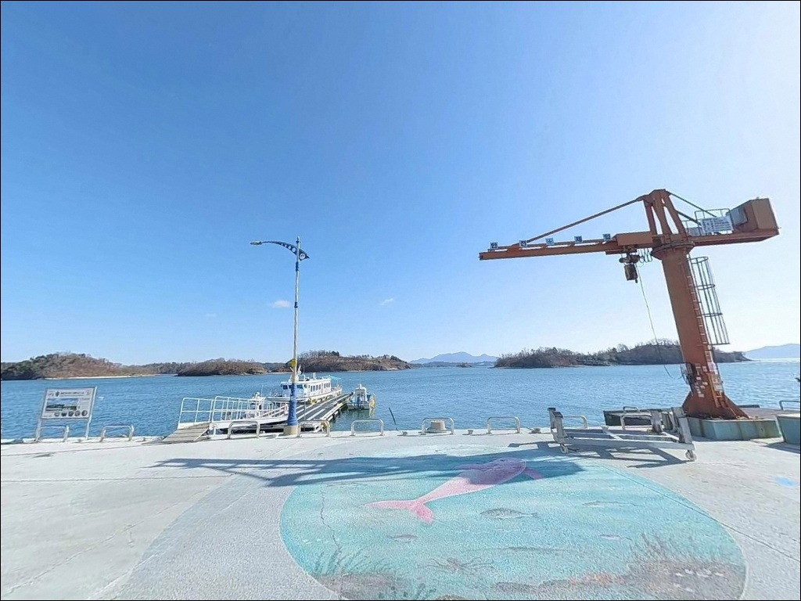
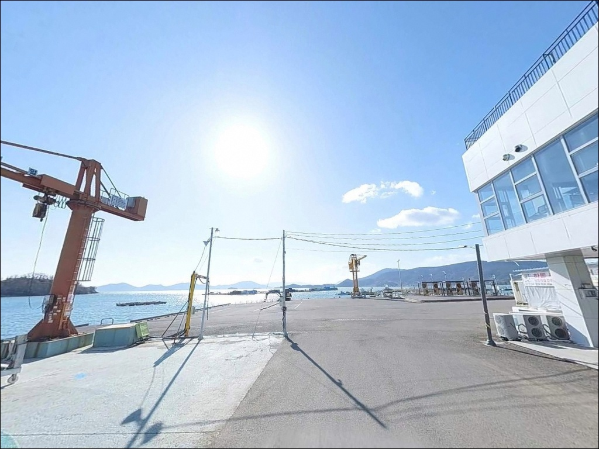
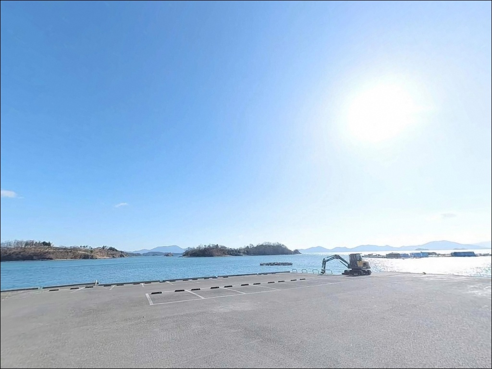
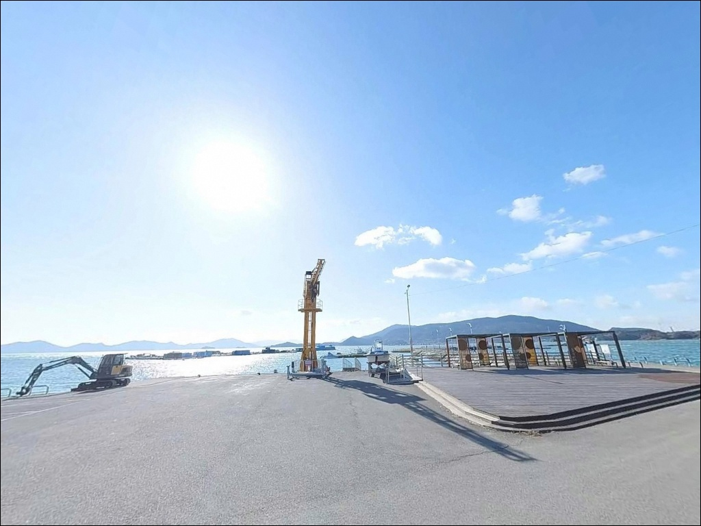
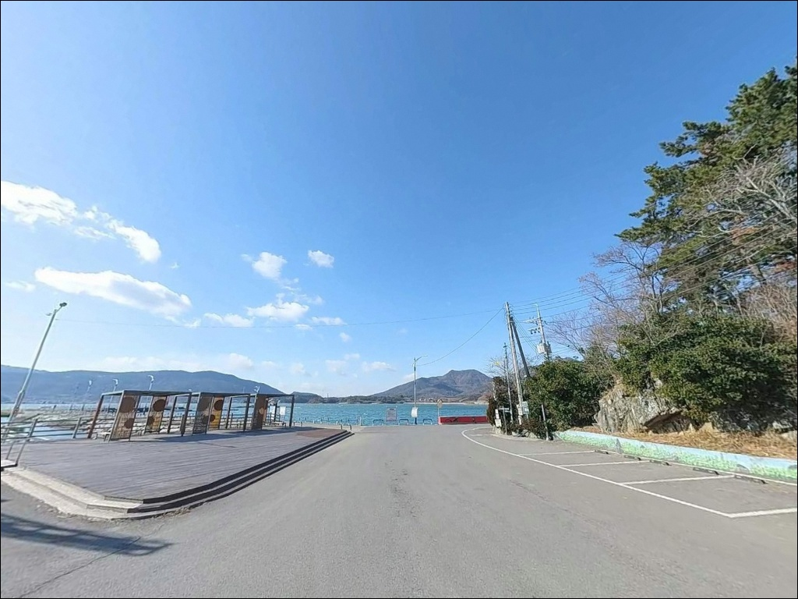
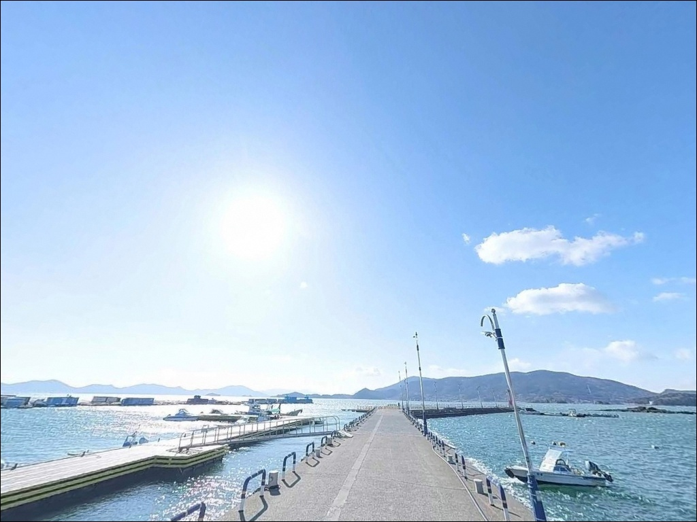
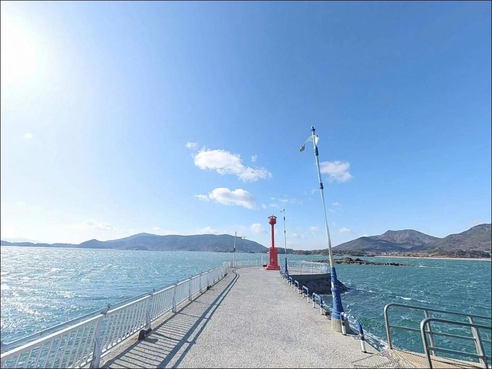

하동 중평항 방파제, 13물 초들물에 살아나는 내만 원투낚시


포인트 안내
중평항
경남 하동군 금남면 중평리 20-4
이 포인트에서 가장 많이 틀리는 판단은
물때 없이 찾아가는 것입니다.
중평항은 진주만 내만에 자리한 펄 저질 포인트로,
조류 속도 자체가 느린 구조이기 때문에
13물~4물, 초들물 타이밍을 빗나가면
낚시 여건이 확연히 달라집니다.
방파제 297m, 물양장 160m 규모의 지방어항으로
어촌뉴딜사업을 통해 정비를 마친 이곳은
접근성과 주차 여건이 양호한 편입니다.
이 글은 중평항의 진입 여건, 차박 환경,
지형 기반 낚시 분석에 집중합니다.
조황 단정이나 특정 어종 보장은
이 글의 범위에 포함되지 않습니다.

1. 진입 동선과 주차 여건
중평항 진입은 중평해안길 포장도로를 통해
직접 이루어집니다.
급경사 구간이나 비포장 구간이 없고,
왕복 2차선 수준으로 닦여 있어
캠핑카·카라반 진입도 무리 없는 편입니다.
하동 IC 방향에서 약 5분 거리로
접근 자체에 부담이 없는 포인트입니다.
주차는 항구 중앙의 넓은 아스팔트 공터와
방파제 시작점 부근 공간을 중심으로
수십 대 수용이 가능한 규모입니다.
어촌뉴딜사업 이후 마르쉐 광장 주변도
주차 후보로 활용할 수 있습니다.
항구 내부 공간이 넓어
대형 차량도 자유롭게 회차가 가능합니다.
방파제 진입부는 콘크리트 포장이 완료되어 있으며,
낚시 장비를 내리고 차를 돌리는 동선에서
큰 불편이 없는 구조입니다.

2. 차박 환경과 야간 체류 여건
중평항은 어촌뉴딜사업으로 가로등 시설이 정비되어 있어
야간 시야 확보가 가능한 환경입니다.
완전한 암흑 환경은 아니며,
인근 하동청소년수련원과 민가가
적당한 거리를 두고 있어
너무 한적하지 않으면서도 안정적인
야간 분위기를 형성합니다.
항구 전면으로 나물섬·장구섬 등 다수의 섬이 분포해
외해 파도의 직접 영향이 완화된 구조입니다.
진주만 내만 특성상 바람이 잠잠한 날이면
수면이 비교적 안정적으로 유지됩니다.
차박 목적으로 하룻밤 머무는 여건은
이 권역 방파제 포인트 중 양호한 편에 속합니다.
항구 내에 현대식 공중화장실이 설치되어 있으며
관리 상태가 유지되고 있습니다.
차박 이용객 입장에서 위생 환경 면에서
기본 조건을 갖춘 포인트입니다.


3. 주변 편의시설 및 인프라 현황
항구 내에 현대식 공중화장실이 갖춰져 있고
어촌문화복합센터와 마르쉐 광장이
같은 부지에 조성되어 있습니다.
수상레저 접안시설과 어린이 바다낚시공원도
함께 운영되고 있어
가족 단위 방문객도 이용할 수 있는 구조입니다.
반경 3km 이내 편의점이나 주유소는
확정 가능한 위치 정보가 없어
출발 전 보급을 먼저 완료하고 진입하는 편이
현실적입니다.
차량으로 5분 거리의 금남면 소재지 방향에
편의점과 주유소가 분포하고 있으며,
출발 전 보급은 진교면 시가지 기준으로
준비하는 것이 가장 효율적입니다.
인근 술상항 일대에는 횟집과 식당이
발달해 있어 현지 식사를 원하는 경우
이 동선을 활용할 수 있습니다.

4. 방문 전 반드시 챙겨야 할 준비사항
중평항 방문에서 가장 먼저 확인할 것은
물때입니다.
바다타임 기준 술상항 물때표를
참고하는 것이 이 해역의 일반적인 방법이며,
13물~4물, 초들물 타이밍에 맞춰
출발 시각을 계획하는 것이 기본 전략입니다.
사리 전후 조류가 강해지는 시기에도
내만형 구조라 큰 위험은 없으나
채비 컨트롤이 달라집니다.
펄 저질 특성상 원투낚시 채비에서
바닥 걸림은 많지 않은 편이나,
여분 채비와 미끼는 충분히 준비하는 편이 좋습니다.
어항 내 어선 접안 구역 및 양식장 설치 구간에서는
낚싯줄 방향을 주의하며,
야간 낚시 시 구명조끼와 미끄럼 방지화는
필수 착용 대상입니다.
외항 테트라포드 구간은 발판이 고르지 않으므로
이동 시 별도의 스파이크 슈즈 또는
낚시 전용 신발을 착용하는 것이 안전합니다.
출조 전 최신 조황은 반드시 검색해 확인하시기 바랍니다.

5. 지형 기반 낚시 여건 분석
중평항의 지형 핵심은 세 가지입니다.
방파제 297m 길이의 테트라포드 외항 구간,
뻘과 모래가 섞인 펄 저질 바닥,
그리고 항 전면에 분포한 섬들이 만드는
반폐쇄형 내만 구조입니다.
이 세 가지 조건이 합쳐져
원투낚시 채비의 안정적 거치에 유리한
낚시 환경을 만들어냅니다.
수심은 방파제 끝단 기준 만조 시
8~10m 안팎으로 확보됩니다.
내항은 3~5m권으로 얕아 찌낚시보다
원투 방식이 효율적인 구간입니다.
인근 대도와 소오포 사이 수로 영향으로
조류 소통이 이루어지며,
들물과 날물 전환 시점에 흐름이 명확해지는
패턴이 이 포인트의 낚시 타이밍 판단 기준입니다.
방파제 끝단과 테트라포드 경계부가
수심 변화가 발생하는 주요 포인트 구간입니다.
바닥 곳곳에 인공 어초와 수중여가 산재해
어류 은신처 역할을 하는 구조이며,
이런 지형에서 기대해 볼 수 있는 어종은
감성돔, 볼락, 농어, 도다리, 붕장어, 갑오징어입니다.
가기 전에 최신 조황은 꼭 검색해 보시기 바랍니다.


6. 외항 방파제에서 조과가 달라지는 낚시 방식 선택법
이 포인트에서 가장 기본적인 낚시 방식은
원투낚시입니다.
청갯지렁이, 홍갯지렁이, 깐새우, 민물새우가
이 해역에서 효과적인 미끼입니다.
방파제 외항 방향으로 채비를 던지고
수심 변화 구간과 바닥층을 탐색하는 패턴이
초보자부터 경험자까지 부담 없이 운영할 수 있는 방식입니다.
릴찌낚시도 중평항 구조에 잘 맞는 방식입니다.
외항 테트라포드 끝바리에서 전방 15m 지점을
공략하는 패턴이 감성돔 찌낚시의 기본 포지션이며,
들물과 날물 전환 시점에 조류 흐름이 살아나면
찌가 자연스럽게 흘러가는 구간이
주요 타깃 지점이 됩니다.
가을철에는 방파제 외항 쪽으로
에깅 채비를 활용할 수 있습니다.
갑오징어를 대상으로 하는 에깅 시즌에는
방파제 끝단에서 섬 방향으로 캐스팅하는 패턴이 유효하며,
볼락 라이트게임은 겨울철 방파제 석축 주변에서
소형 지그헤드 채비로 운영하는 방식입니다.
숭어 찌낚시는 내외항 가리지 않고
연중 이루어지는 스타일입니다.

7. 대안 포인트와 플랜 B 동선
중평항이 여의치 않을 때의
첫 번째 대안은 술상항입니다.
중평항에서 약 1.5km 거리로
같은 진주만 해역 안에 위치해
조류·어종 패턴이 거의 동일합니다.
전어 시즌에는 식당가도 활기를 띠는 항구라
식사를 겸한 이동 동선에도 유리합니다.
조류가 더 살아 있는 포인트를 원한다면
서쪽 약 8km 거리의 노량항을 고려할 수 있습니다.
남해대교 아래에 위치해 조류가 강하며,
대물 감성돔과 농어를 노리는 전문 낚시인이
찾는 포인트입니다.
중평항과 낚시 환경이 상당히 다르므로
물때와 채비를 달리 준비하는 것이 기본입니다.
차박 중심으로 이동한다면
술상항 주차장이 중평항과 유사한 넓은 부지를 갖추고 있어
대안 숙영 후보로 활용할 수 있습니다.
노량수도 방면도 공간 넉넉한 항구 구조로
차량 접근성이 좋은 편입니다.

물때를 맞추고 가면
중평항은 조용한 포인트가 됩니다
원투낚시나 릴찌낚시를 주로 즐기는 낚시인이라면
중평항의 지형 조건이 잘 맞는 편입니다.
펄 저질 내만 구조는 채비 걸림이 적고,
방파제 끝단 수심이 안정적으로 확보되어
초행자도 자리 선정에 큰 어려움이 없습니다.
어촌뉴딜사업으로 정비된 주차 공간과
공중화장실까지 갖춰져 있어
가족 단위 방문에도 부담이 없는 구조입니다.
반면 조류가 강한 수로형 포인트나
섬 갯바위 낚시를 선호하는 낚시인이라면
이 포인트보다 노량항이나
노량수도 방면이 더 맞는 환경입니다.
물때 확인, 사전 보급, 채비 여유분 준비,
이 세 가지를 갖추고 간다면
중평항은 조용하고 안정적인 출조지가 됩니다.
야간 낚시를 마치고 넓은 주차장에서
하룻밤 머무는 차박 낚시 여행자라면,
정돈된 항구 환경과 편의시설이 갖춰진
이곳이 편하게 쉬기 좋은 포인트입니다.